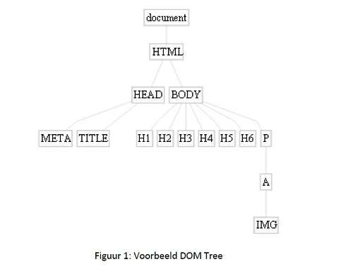
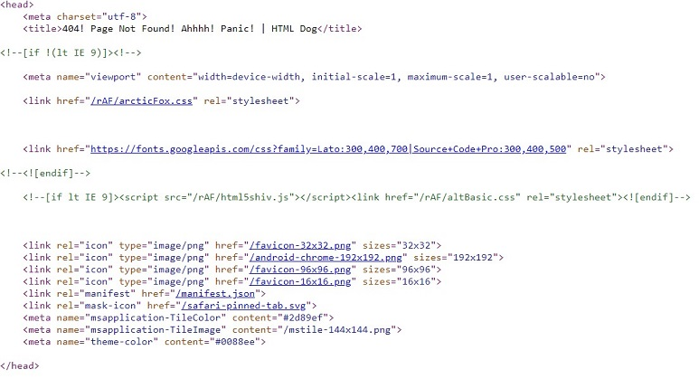
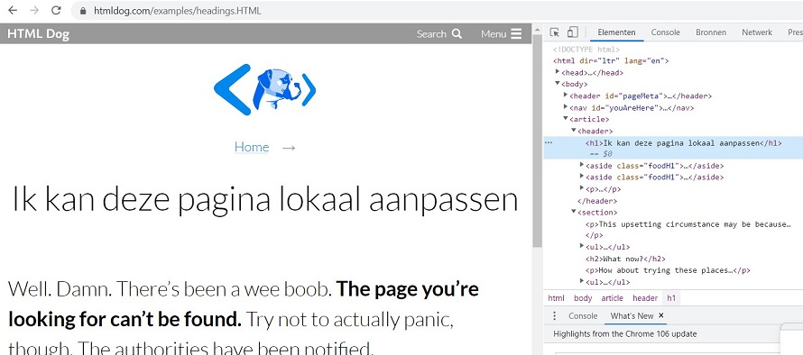

Opdracht 1
Document Object Model
http://HTMLdog.com/examples/headings1.HTML

Document: komt overeen met het doctype
HTML komt overeen met alles wat tussen de html tags staan. Het root element.
Verder wordt de code opgesplitst in 2 grote delen: de head en de body.
In het head gedeelte staan geen inhoudelijke gegevens. Hierin staan de title, meta en link elementen.
Screenshot van de head op de website van HTMLdog:

In de body bevinden zich semantische elementen. Voorbeeld op de website: header, nav, aside, article, section,footer. In de body bevinden zich ook paragrafen, hoofdtitels, lijsten, afbeeldingen.
Opdracht2

Opdracht3
https://jqueryui.com/accordion/
Uit welke elementen bestaat elke accordion section in de DOM-tree?
meta, link,script,div,h3.
Het script van accordeon wordt aangesproken wanneer je op een sectie klikt.
Door de id accordeon wordt er een link gelegd naar het script